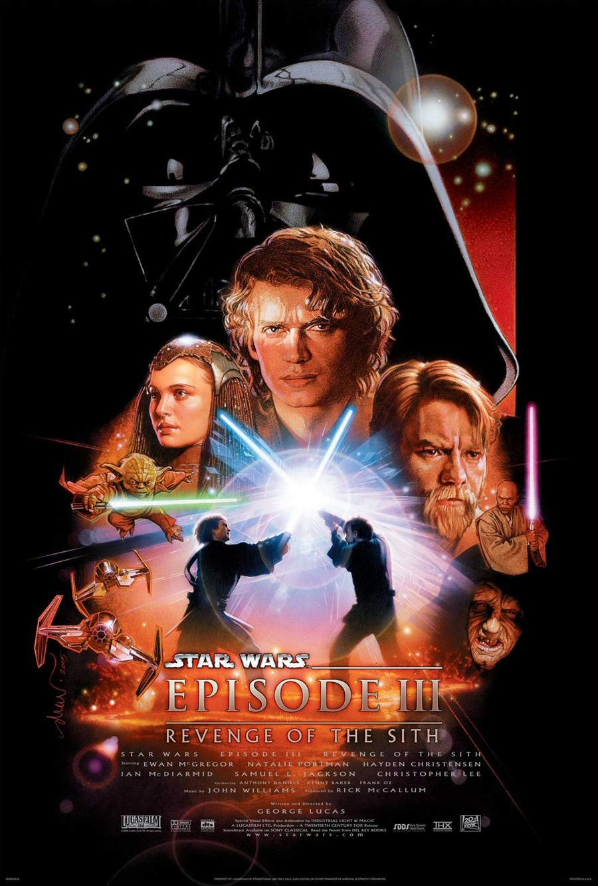

HOME
"Revenge of the Sith" is where the Galactic Republic falls and the Empire rises. Anakin Skywalker, swayed by Chancellor Palpatine (The Sith Lord), turns to the dark side and becomes Darth Vader. Palpatine orders the clone troopers to kill all Jedi, almost wiping them out. Anakin and Obi-Wan have a epic battle; Anakin loses and becomes mostly machine. Padme, Anakins wife gives birth to Leia and Luke but dies in child birth. The twins are hidden away, and the film ends with the Sith in control of the galaxy.

Company Credit: Lucas Films
Release Date: May 19th, 2005
Genres: Sci-Fi | Fantasy | Action | Adventure
Rating: PG-13
Running Time: 2hrs 20 mins